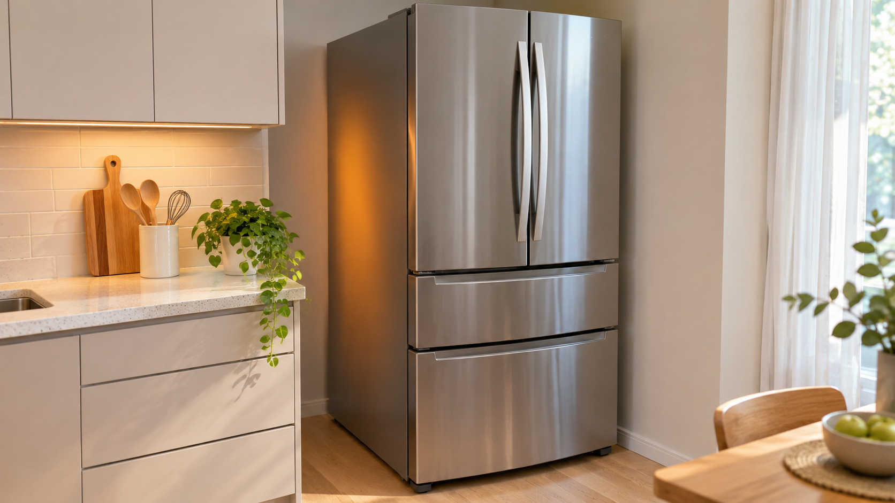

냉장고 옆면이 따뜻한 것은 내부 열을 밖으로 내보내는 과정에서 정상일 수 있습니다. 하지만 손대기 어려운 열과 탄 냄새, 냉장 불량, 반복 정지가 함께 나타나면 통풍과 냉각 계통을 점검해야 합니다.
뒷면 커버를 열거나 냉매 배관을 만지거나 뜨거운 옆면을 물로 식히지 마세요.
탄 냄새·스파크·차단기 작동, 냉장 불량, 비정상 소음이 동반되면 점검받으세요. 냉장 불량 점검법과 문 밀착 확인법을 참고하세요.
제품별 차이가 있으므로 제조사 공식 사용설명서와 고객지원 안내를 우선 확인하세요.